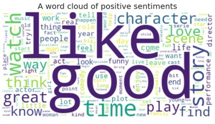

Sentiment Analysis & Topic Identification
Summary
The project aimed to analyze movie reviews to classify sentiments (positive or negative) and identify prevalent topics within each sentiment category. The dataset used was the IMDb Movie Reviews dataset containing 50,000 reviews. A sample of 5,000 reviews was analyzed to ensure computational efficiency while maintaining statistical relevance.
Key Insights
Topic Identification:
- Positive Reviews: Topics included the general mood of discussions, recommendations, themes (e.g., family, love), humor, characters, and soundtracks.
- Negative Reviews: Topics included criticism of acting, poor adaptations from source material, failed humor, specific plot points (e.g., death), and dissatisfaction with special effects.
- Coherence Scores: Both positive and negative topics had moderate coherence (0.50-0.52), indicating reasonable interpretability.
Sentiment Interpretability
Best Model: Logistic Regression with CountVectorizer was chosen as the final model due to its highest performance for negative reviews (0.83), ensuring critical feedback was captured efficiently.
Baseline Comparison: The TextBlob rule-based model achieved only 69% accuracy with poor recall for negative reviews (0.45), highlighting the superiority of machine learning approaches.
Impact of the Project
- Enables movie studios or streaming platforms to automatically classify reviews and prioritize addressing negative feedback.
- Identifies common themes in negative reviews (e.g., acting, plot, humor), providing actionable insights for improving future productions.
- Technical Contributions: Demonstrated the effectiveness of NMF for topic modeling in unstructured text data.
- Showed that simpler models (e.g., Logistic Regression) can outperform complex ones (e.g., LightGBM) for sentiment analysis when recall of negative reviews is prioritized.
Go Back to Projects